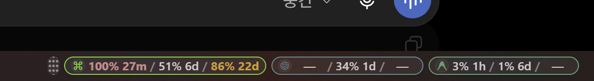

5시간 · 주간 · 월간 사용률을 한눈에. Claude, Codex, Gemini, Antigravity, DeepSeek 등 56개 AI 코딩 도구의 실시간 한도를 항상 떠 있는 글래스 오버레이로 확인하세요.
모호한 추정치 대신 실제 프로바이더 쿼터 윈도우를 정밀하게 분류하여 보여줍니다.
5시간 · 주간 · 월간 3개 고정 슬롯으로 실제 소비한 쿼터 퍼센트를 명확히 표시합니다.
임계치에 도달한 특정 슬롯만 주황(75% 경고) 또는 빨강(90% 위험)으로 개별 착색됩니다.
퍼센트 옆에 가장 큰 단위 1개로 초기화 남은 시간을 표시합니다.
Gemini 공유 풀의 5시간 및 주간 쿼터 버킷을 Quota Summary로 안정적 추출합니다.
주기 구분이 없는 프로바이더는 modelSpecific 등 유효한 메트릭을 자동 표시합니다.
GitHub Actions 자동 빌드와 SHA-256 검증 PowerShell 1줄 자동 설치를 지원합니다.
Windows 작업표시줄 위에 항상 떠 있는 글래스 필(Glass Pill) 오버레이로 5시간/주간/월간 실시간 쿼터를 확인하세요.

시중의 거의 모든 AI 코딩 어시스턴트와 LLM 클라우드 사용량을 손쉽게 모니터링할 수 있습니다.